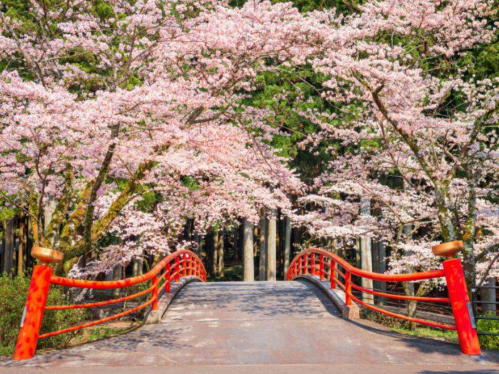
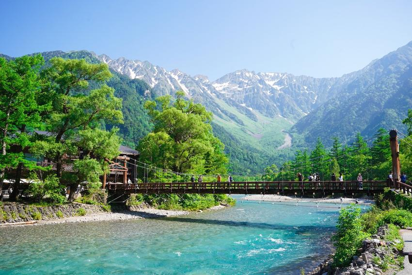
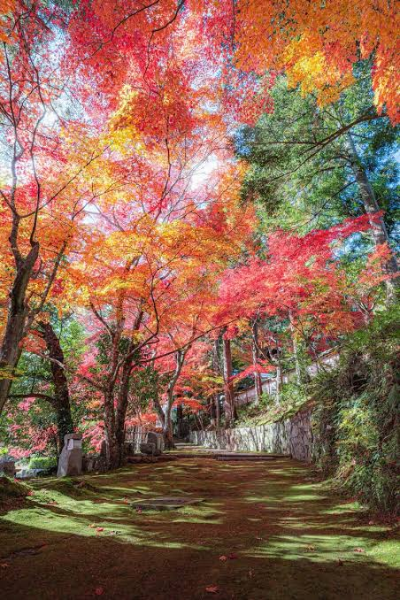
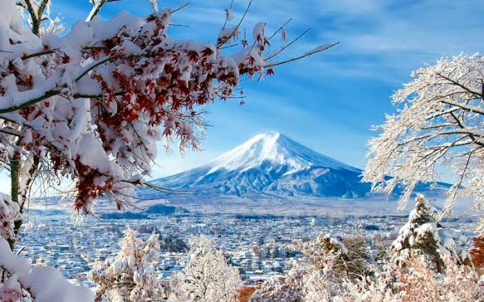

Spring
Spring is famous for cherry blossoms. It is a beautiful time to spend time outdoors and enjoy the warmer weather.
Activities
- Cherry blossom viewing (Hanami)
- Visiting flower parks
- Spring festivals
- Outdoor picnics
Explore Japan
Each season in Japan offers different experiences. Explore some activities that you can enjoy throughout the year.

Spring is famous for cherry blossoms. It is a beautiful time to spend time outdoors and enjoy the warmer weather.

Summer brings warm weather, colorful festivals, fireworks, and many opportunities to enjoy the outdoors.

Autumn is known for beautiful red, orange, and yellow leaves. The cooler weather is also great for exploring nature.

Winter offers snowy landscapes, beautiful illuminations, winter sports, and relaxing hot spring experiences.